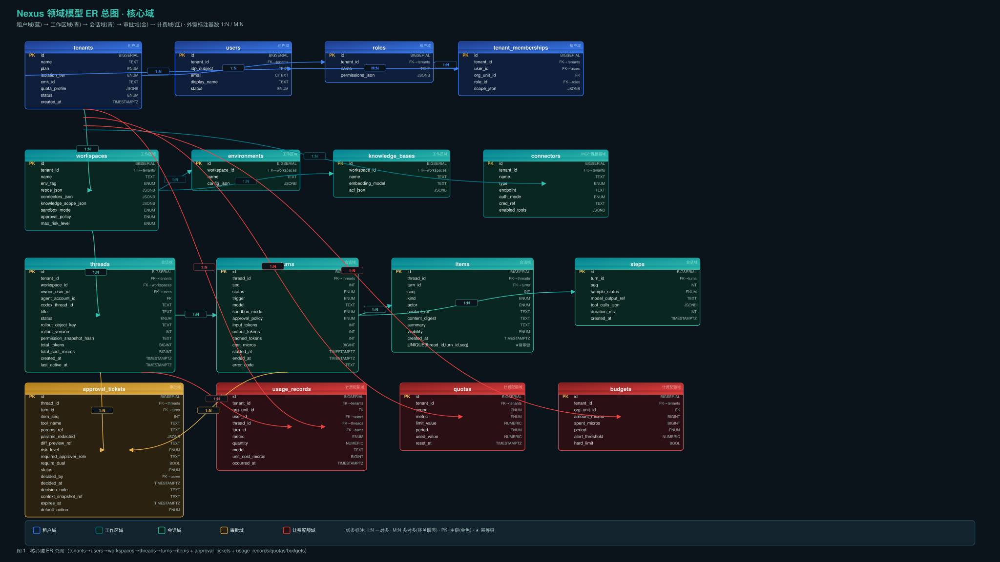
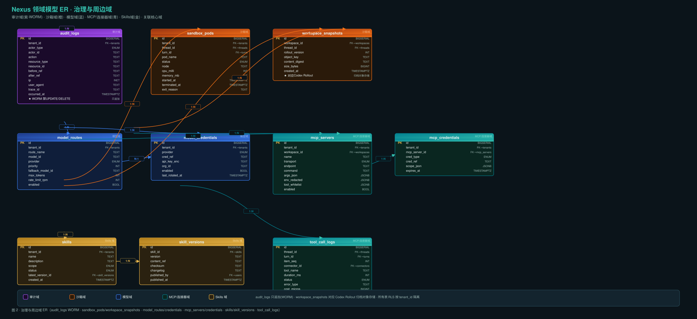

0. 领域模型设计原则
一句话：Nexus 控制平面的数据模型不是 Codex 本地 SQLite 的翻版，而是以「事件即真相」为核心、以 Postgres RLS 为兜底的云端领域模型。会话真相在云端 DB，Harness 只持有可重建的执行态。
| # | 原则 | 说明 |
|---|---|---|
| 1 | 事件即真相 | 所有对用户可见状态来自 app-server 事件流；控制面消费事件写 Postgres，Pod 死不丢会话。items 表是事件流持久化形态 |
| 2 | 幂等键 thread_id + turn_id + item_seq | UNIQUE(thread_id, turn_id, seq)——同一 Turn 内同序号事件只写一次，支持 at-least-once 投递语义下精确去重 |
| 3 | RLS 租户隔离 | 所有业务表强制 Row-Level Security tenant_id = current_setting('app.tenant_id')；ORM 漏加 WHERE 也能兜底拒绝跨租户访问 |
| 4 | WORM 审计 | audit_logs 与 usage_records 只追加；应用账号无 UPDATE/DELETE 权限；按月分区 + 投递 SIEM |
| 5 | 大字段外置 | content_ref / params_ref / diff_preview_ref / before_ref / after_ref 均指向对象存储，主表只存摘要与 digest |
| 6 | 权限快照防漂移 | threads.permission_snapshot_hash 记录创建时权限边界哈希；事后可证明运行时权限 |
| 7 | 配置即政策 | 租户差异不下沉数据模型，而是下发的 config.toml + execpolicy 规则集 |
1. 核心域 ER 总图

图 1 · 核心域 ER 总图（tenants→users→workspaces→threads→turns→items + approval_tickets + usage_records/quotas/budgets）
域着色：租户域 工作区域 会话域 审批域 计费配额域 · PK=主键(金色) · ★=幂等键 · 线条标注 1:N / M:N
2. 治理与周边域 ER 图

图 2 · 治理与周边域 ER（audit_logs WORM · sandbox_pods/workspace_snapshots · model_routes/credentials · mcp_servers/credentials · skills/skill_versions · tool_call_logs）
域着色：审计域(WORM) 沙箱域 模型域 MCP/连接器域 Skills 域
3. 核心实体清单
点击展开/折叠实体清单（26 张表）
| 实体 | 所属域 | 主键 | 关键字段 | 说明 |
|---|---|---|---|---|
tenants | 租户域 | id | name, plan, isolation_tier, cmk_id, quota_profile | 多租户根节点；isolation_tier 决定隔离级别 |
users | 租户域 | id | tenant_id, idp_subject, email | 平台用户；idp_subject 对接 IdP |
roles | 租户域 | id | tenant_id, name, permissions_json | 角色定义；权限矩阵 |
tenant_memberships | 租户域 | id | tenant_id, user_id, role_id, scope_json | 用户↔角色 M:N 关联表 |
workspaces | 工作区域 | id | tenant_id, repos_json, sandbox_mode, approval_policy | 绑定仓库/连接器/知识库范围 |
environments | 工作区域 | id | workspace_id, config_json | 环境配置(dev/staging/prod) |
knowledge_bases | 工作区域 | id | workspace_id, embedding_model, acl_json | RAG 知识库 |
threads | 会话域 | id | tenant_id, codex_thread_id, rollout_object_key, permission_snapshot_hash | ★对应 Codex Thread（云端化） |
turns | 会话域 | id | thread_id, seq, status, model, cost_micros | ★对应 Codex Turn |
items | 会话域 | id | thread_id, turn_id, seq, kind, content_ref | ★最大最热表；UNIQUE(thread_id,turn_id,seq) 幂等键 |
steps | 会话域 | id | turn_id, seq, sample_status, tool_calls_json | ★对应 Codex Step |
approval_tickets | 审批域 | id | thread_id, turn_id, tool_name, risk_level, status, decided_by | HITL 审批一等公民 |
usage_records | 计费域 | id | tenant_id, metric, quantity, unit_cost_micros | 计量流水；只追加 |
quotas | 计费域 | id | tenant_id, scope, metric, limit_value, period | 配额限值 |
budgets | 计费域 | id | tenant_id, amount_micros, alert_threshold, hard_limit | 预算控制 |
sandbox_pods | 沙箱域 | id | tenant_id, thread_id, pod_name, status, cpu_milli | 执行面 Pod 生命周期 |
workspace_snapshots | 沙箱域 | id | workspace_id, rollout_version, object_key | ★对应 Codex Rollout 归档 |
audit_logs | 审计域 | id | tenant_id, actor, action, before_ref, after_ref, trace_id | WORM 只追加；按月分区 |
model_routes | 模型域 | id | tenant_id, model_id, provider, fallback_model_id | 多模型路由；支持降级 |
model_credentials | 模型域 | id | tenant_id, provider, cred_ref, api_key_enc | 模型密钥管理 |
mcp_servers | MCP域 | id | tenant_id, transport, command, tool_whitelist | MCP 服务器注册 |
mcp_credentials | MCP域 | id | mcp_server_id, cred_type, cred_ref, expires_at | MCP 凭据注入 |
skills | Skills域 | id | tenant_id, name, scope, latest_version_id | 企业技能市场 |
skill_versions | Skills域 | id | skill_id, version, content_ref, checksum | 技能版本快照 |
connectors | MCP域 | id | tenant_id, type, endpoint, cred_ref, enabled_tools | 连接器注册表 |
tool_call_logs | MCP域 | id | thread_id, turn_id, connector_id, tool_name, cost_micros | 工具调用审计 |
4. 关系矩阵
点击展开关系矩阵（30 条关系）
| 从 | 到 | 基数 | 外键 | 说明 |
|---|---|---|---|---|
| tenants | users | 1:N | users.tenant_id | 租户下多用户 |
| tenants | roles | 1:N | roles.tenant_id | 租户自定义角色 |
| users | tenant_memberships | M:N | memberships.user_id | 经关联表关联角色 |
| roles | tenant_memberships | 1:N | memberships.role_id | 一个角色多成员 |
| tenants | workspaces | 1:N | workspaces.tenant_id | 租户下多工作区 |
| workspaces | environments | 1:N | environments.workspace_id | 工作区多环境 |
| workspaces | knowledge_bases | 1:N | knowledge_bases.workspace_id | 工作区多知识库 |
| tenants | connectors | 1:N | connectors.tenant_id | 租户级连接器 |
| workspaces | threads | 1:N | threads.workspace_id | 工作区下多会话 |
| threads | turns | 1:N | turns.thread_id | 会话内多轮次 |
| turns | items | 1:N | items.turn_id | 轮次内多条事件 |
| turns | steps | 1:N | steps.turn_id | 轮次内多采样步骤 |
| threads | approval_tickets | 1:N | approval_tickets.thread_id | 会话级审批 |
| turns | approval_tickets | 1:N | approval_tickets.turn_id | 轮次级审批 |
| threads | usage_records | 1:N | usage_records.thread_id | 会话级用量 |
| tenants | quotas | 1:N | quotas.tenant_id | 租户配额 |
| tenants | budgets | 1:N | budgets.tenant_id | 租户预算 |
| threads | sandbox_pods | 1:N | sandbox_pods.thread_id | 会话级 Pod |
| threads | workspace_snapshots | 1:N | workspace_snapshots.thread_id | 会话级快照 |
| tenants | model_routes | 1:N | model_routes.tenant_id | 租户级模型路由 |
| mcp_servers | mcp_credentials | 1:N | mcp_credentials.mcp_server_id | MCP 凭据 |
| skills | skill_versions | 1:N | skill_versions.skill_id | 技能版本链 |
| turns | tool_call_logs | 1:N | tool_call_logs.turn_id | 轮次级工具调用 |
5. 分域 DDL
5.1 租户域 DDL
-- 租户
CREATE TABLE tenants (
id BIGSERIAL PRIMARY KEY,
name TEXT NOT NULL,
plan TEXT NOT NULL DEFAULT 'team',
isolation_tier TEXT NOT NULL DEFAULT 'shared',
cmk_id TEXT,
quota_profile JSONB NOT NULL DEFAULT '{}',
status TEXT NOT NULL DEFAULT 'active',
created_at TIMESTAMPTZ NOT NULL DEFAULT NOW()
);
-- 用户
CREATE TABLE users (
id BIGSERIAL PRIMARY KEY,
tenant_id BIGINT NOT NULL REFERENCES tenants(id),
idp_subject TEXT,
email CITEXT UNIQUE,
display_name TEXT,
status TEXT NOT NULL DEFAULT 'active',
created_at TIMESTAMPTZ NOT NULL DEFAULT NOW()
);
-- 角色
CREATE TABLE roles (
id BIGSERIAL PRIMARY KEY,
tenant_id BIGINT NOT NULL REFERENCES tenants(id),
name TEXT NOT NULL,
permissions_json JSONB NOT NULL DEFAULT '{}',
UNIQUE(tenant_id, name)
);
-- 租户成员（用户↔角色 M:N）
CREATE TABLE tenant_memberships (
id BIGSERIAL PRIMARY KEY,
tenant_id BIGINT NOT NULL REFERENCES tenants(id),
user_id BIGINT NOT NULL REFERENCES users(id),
org_unit_id BIGINT,
role_id BIGINT NOT NULL REFERENCES roles(id),
scope_json JSONB DEFAULT '{}',
UNIQUE(tenant_id, user_id, role_id)
);
-- RLS 策略
ALTER TABLE tenants ENABLE ROW LEVEL SECURITY;
ALTER TABLE users ENABLE ROW LEVEL SECURITY;
CREATE POLICY tenant_isolation ON tenants USING (id = current_setting('app.tenant_id')::BIGINT);
CREATE POLICY tenant_isolation ON users USING (tenant_id = current_setting('app.tenant_id')::BIGINT);5.2 工作区域 DDL
CREATE TABLE workspaces (
id BIGSERIAL PRIMARY KEY,
tenant_id BIGINT NOT NULL REFERENCES tenants(id),
name TEXT NOT NULL,
env_tag TEXT DEFAULT 'dev',
repos_json JSONB DEFAULT '[]',
connectors_json JSONB DEFAULT '[]',
knowledge_scope_json JSONB DEFAULT '{}',
sandbox_mode TEXT DEFAULT 'read-only',
approval_policy TEXT DEFAULT 'on-request',
max_risk_level TEXT DEFAULT 'medium',
UNIQUE(tenant_id, name)
);
CREATE TABLE environments (
id BIGSERIAL PRIMARY KEY,
workspace_id BIGINT NOT NULL REFERENCES workspaces(id),
name TEXT NOT NULL,
config_json JSONB DEFAULT '{}'
);
CREATE TABLE knowledge_bases (
id BIGSERIAL PRIMARY KEY,
workspace_id BIGINT NOT NULL REFERENCES workspaces(id),
name TEXT NOT NULL,
embedding_model TEXT DEFAULT 'text-embedding-3-large',
acl_json JSONB DEFAULT '{}'
);5.3 会话域 DDL（核心）
-- ★ 会话（对应 Codex Thread）
CREATE TABLE threads (
id BIGSERIAL PRIMARY KEY,
tenant_id BIGINT NOT NULL REFERENCES tenants(id),
workspace_id BIGINT NOT NULL REFERENCES workspaces(id),
owner_user_id BIGINT REFERENCES users(id),
codex_thread_id TEXT,
title TEXT,
status TEXT NOT NULL DEFAULT 'active',
rollout_object_key TEXT,
rollout_version INT DEFAULT 0,
permission_snapshot_hash TEXT, -- ★ 权限快照
total_tokens BIGINT DEFAULT 0,
total_cost_micros BIGINT DEFAULT 0,
created_at TIMESTAMPTZ NOT NULL DEFAULT NOW(),
last_active_at TIMESTAMPTZ NOT NULL DEFAULT NOW()
);
-- ★ 轮次（对应 Codex Turn）
CREATE TABLE turns (
id BIGSERIAL PRIMARY KEY,
thread_id BIGINT NOT NULL REFERENCES threads(id),
seq INT NOT NULL,
status TEXT NOT NULL DEFAULT 'pending',
trigger TEXT DEFAULT 'user',
model TEXT,
sandbox_mode TEXT,
approval_policy TEXT,
input_tokens INT DEFAULT 0,
output_tokens INT DEFAULT 0,
cost_micros BIGINT DEFAULT 0,
started_at TIMESTAMPTZ,
ended_at TIMESTAMPTZ,
UNIQUE(thread_id, seq)
);
-- ★★ 事件项（对应 Codex Item）最大最热的表
CREATE TABLE items (
id BIGSERIAL PRIMARY KEY,
thread_id BIGINT NOT NULL REFERENCES threads(id),
turn_id BIGINT NOT NULL REFERENCES turns(id),
seq INT NOT NULL,
kind TEXT NOT NULL,
actor TEXT NOT NULL,
content_ref TEXT, -- ★ 大字段指向对象存储
content_digest TEXT,
summary TEXT,
visibility TEXT DEFAULT 'user_visible',
created_at TIMESTAMPTZ NOT NULL DEFAULT NOW(),
UNIQUE(thread_id, turn_id, seq) -- ★★★ 幂等键
);
-- 采样步骤（对应 Codex Step）
CREATE TABLE steps (
id BIGSERIAL PRIMARY KEY,
turn_id BIGINT NOT NULL REFERENCES turns(id),
seq INT NOT NULL,
sample_status TEXT,
model_output_ref TEXT,
tool_calls_json JSONB,
UNIQUE(turn_id, seq)
);5.4 审批域 DDL
CREATE TABLE approval_tickets (
id BIGSERIAL PRIMARY KEY,
thread_id BIGINT NOT NULL REFERENCES threads(id),
turn_id BIGINT NOT NULL REFERENCES turns(id),
item_seq INT NOT NULL,
tool_name TEXT NOT NULL,
params_ref TEXT, -- 原始参数(对象存储)
params_redacted JSONB, -- 脱敏后参数
diff_preview_ref TEXT,
risk_level TEXT DEFAULT 'medium',
required_approver_role TEXT,
require_dual BOOLEAN DEFAULT FALSE,
status TEXT NOT NULL DEFAULT 'pending',
decided_by BIGINT REFERENCES users(id),
decided_at TIMESTAMPTZ,
context_snapshot_ref TEXT,
expires_at TIMESTAMPTZ,
default_action TEXT DEFAULT 'deny'
);
CREATE INDEX idx_approval_status ON approval_tickets(status) WHERE status = 'pending';5.5 计费配额域 DDL
-- ★ 只追加，无 UPDATE/DELETE 权限
CREATE TABLE usage_records (
id BIGSERIAL PRIMARY KEY,
tenant_id BIGINT NOT NULL REFERENCES tenants(id),
user_id BIGINT REFERENCES users(id),
thread_id BIGINT REFERENCES threads(id),
turn_id BIGINT REFERENCES turns(id),
metric TEXT NOT NULL, -- token_in/out/cached, tool_call, sandbox_second, storage_byte
quantity NUMERIC(20,4) NOT NULL,
model TEXT,
unit_cost_micros BIGINT,
occurred_at TIMESTAMPTZ NOT NULL DEFAULT NOW()
);
CREATE TABLE quotas (
id BIGSERIAL PRIMARY KEY,
tenant_id BIGINT NOT NULL REFERENCES tenants(id),
scope TEXT NOT NULL, -- tenant/org_unit/user/workspace
metric TEXT NOT NULL,
limit_value NUMERIC(20,4) NOT NULL,
period TEXT NOT NULL,
used_value NUMERIC(20,4) DEFAULT 0,
reset_at TIMESTAMPTZ
);
CREATE TABLE budgets (
id BIGSERIAL PRIMARY KEY,
tenant_id BIGINT NOT NULL REFERENCES tenants(id),
amount_micros BIGINT NOT NULL,
spent_micros BIGINT DEFAULT 0,
period TEXT NOT NULL,
alert_threshold NUMERIC(5,2) DEFAULT 0.8,
hard_limit BOOLEAN DEFAULT TRUE
);5.6 沙箱域 + 审计域(WORM) DDL
CREATE TABLE sandbox_pods (
id BIGSERIAL PRIMARY KEY,
tenant_id BIGINT NOT NULL REFERENCES tenants(id),
thread_id BIGINT NOT NULL REFERENCES threads(id),
turn_id BIGINT REFERENCES turns(id),
pod_name TEXT NOT NULL,
status TEXT NOT NULL DEFAULT 'pending',
node TEXT,
cpu_milli INT,
memory_mb INT,
started_at TIMESTAMPTZ,
terminated_at TIMESTAMPTZ
);
CREATE TABLE workspace_snapshots (
id BIGSERIAL PRIMARY KEY,
workspace_id BIGINT NOT NULL REFERENCES workspaces(id),
thread_id BIGINT REFERENCES threads(id),
rollout_version INT NOT NULL,
object_key TEXT NOT NULL, -- ★ 对象存储(按租户前缀+CMK)
content_digest TEXT NOT NULL,
size_bytes BIGINT
);
-- ★★★ WORM 审计日志：只追加，按月分区
CREATE TABLE audit_logs (
id BIGSERIAL,
tenant_id BIGINT NOT NULL REFERENCES tenants(id),
actor_type TEXT NOT NULL,
actor_id TEXT,
action TEXT NOT NULL,
resource_type TEXT,
resource_id TEXT,
before_ref TEXT,
after_ref TEXT,
ip INET,
trace_id TEXT,
occurred_at TIMESTAMPTZ NOT NULL DEFAULT NOW()
) PARTITION BY RANGE (occurred_at);
CREATE TABLE audit_logs_2026_09 PARTITION OF audit_logs
FOR VALUES FROM ('2026-09-01') TO ('2026-10-01');
-- ★ 应用账号 GRANT INSERT ONLY（不授予 UPDATE/DELETE）5.7 模型域 + MCP/连接器域 + Skills 域 DDL
-- 模型路由
CREATE TABLE model_routes (
id BIGSERIAL PRIMARY KEY,
tenant_id BIGINT NOT NULL REFERENCES tenants(id),
route_name TEXT NOT NULL,
model_id TEXT NOT NULL,
provider TEXT NOT NULL,
priority INT DEFAULT 0,
fallback_model_id TEXT,
max_tokens INT,
rate_limit_rpm INT,
enabled BOOLEAN DEFAULT TRUE,
UNIQUE(tenant_id, route_name)
);
-- MCP 服务器
CREATE TABLE mcp_servers (
id BIGSERIAL PRIMARY KEY,
tenant_id BIGINT NOT NULL REFERENCES tenants(id),
workspace_id BIGINT REFERENCES workspaces(id),
name TEXT NOT NULL,
transport TEXT NOT NULL,
endpoint TEXT,
command TEXT,
tool_whitelist JSONB DEFAULT '[]',
enabled BOOLEAN DEFAULT TRUE,
UNIQUE(tenant_id, name)
);
-- Skills
CREATE TABLE skills (
id BIGSERIAL PRIMARY KEY,
tenant_id BIGINT NOT NULL REFERENCES tenants(id),
name TEXT NOT NULL,
scope TEXT NOT NULL DEFAULT 'tenant',
status TEXT NOT NULL DEFAULT 'active',
latest_version_id BIGINT,
UNIQUE(tenant_id, name)
);
CREATE TABLE skill_versions (
id BIGSERIAL PRIMARY KEY,
skill_id BIGINT NOT NULL REFERENCES skills(id),
version TEXT NOT NULL,
content_ref TEXT NOT NULL,
checksum TEXT NOT NULL,
published_by BIGINT REFERENCES users(id),
UNIQUE(skill_id, version)
);6. 与 Codex 原语映射
核心映射：Codex 的 Thread→Turn→Item→Step 原语在 Nexus 云端对应同名表（threads/turns/items/steps）；Approval（TUI 弹窗）桥接为云端一等公民 approval_tickets；Rollout（本地文件）归档为 workspace_snapshots + 对象存储。
| Codex 原语 | Nexus 表 | 映射关系 | 说明 |
|---|---|---|---|
| Thread | threads | 1:1 映射 | app-server Thread → 云端一行；codex_thread_id 存 app-server ID；rollout_object_key 指向对象存储 |
| Turn | turns | 1:1 映射 | 每个 Turn 对应一行；status 状态机更丰富（加 waiting_approval） |
| Item | items | 1:1 映射 | ★事件流持久化形态；UNIQUE(thread_id,turn_id,seq) 幂等键 |
| Step | steps | 1:1 映射 | Turn 内单次采样快照 |
| Approval | approval_tickets | 桥接映射 | TUI 弹窗→云端一等公民；Pod 死后从 DB 重建审批态 |
| Rollout | workspace_snapshots | 归档映射 | 本地 rollout → 对象存储 + 快照行；Pod 死后可恢复 |
| Session | （不映射） | 内部运行态 | 不对外暴露；Pod 死后从 Thread+Turn+Item+Rollout 重建 |
Codex 本地 Nexus 云端 Postgres
────────── ──────────────────
Thread (app-server) ──────────→ threads
└ Turn ──────────→ └ turns
└ Step ──────────→ └ steps
└ Item ──────────→ └ items ★幂等键
└ Approval (TUI) ── bridge ─→ └ approval_tickets
Rollout (本地文件) ── sync ──→ workspace_snapshots + 对象存储
Session (内部运行态) ── (不映射) ── 从 threads+turns+items+rollout 重建7. 索引与分区策略
| 表 | 策略 | 说明 |
|---|---|---|
items | 按 tenant_id + 月范围分区 | ★最大最热表；按 tenant_id 聚簇 + 按月分区；大字段外置 |
audit_logs | 按月分区 (PARTITION BY RANGE) | WORM 只追加；冷分区归档对象存储；合规保留 1-7 年 |
usage_records | 按 tenant_id + 月分区 | 计量流水高频写；便于聚合与归档 |
turns | 索引 (thread_id, seq) UNIQUE | 会话内顺序访问 |
threads | 索引 (tenant_id, status, last_active_at DESC) | 列表页"我的活跃会话" |
approval_tickets | 部分索引 WHERE status='pending' | 审批中心只查 pending；极小极快 |
sandbox_pods | 索引 (tenant_id, status) | 调度器查可用 Pod |
分区管理：pg_partman / pg_cron 定期创建未来分区、归档旧分区；冷分区（>3 月）DETACH 后导出到对象存储。分区表主键必须包含分区键。
8. 数据生命周期
| 层级 | 数据 | 存储 | 保留期 | 说明 |
|---|---|---|---|---|
| 热 | items(近3月) · turns · threads(active) · approval(pending) | PG 主库 | 0-3 月 | 高频读写；大字段外置 |
| 热 | usage_records(当月) · sandbox_pods(active) | PG 主库 | 当月 | 计量实时聚合 |
| 温 | items(3-12月) · threads(archived) · audit_logs(当年) | PG 分区 | 3-12 月 | 低频查询 |
| 冷 | audit_logs(>1年) · usage_records(>1年) | 对象存储 + SIEM | 1-7 年 | 合规留存 |
| 冷 | workspace_snapshots (rollout 归档) | 对象存储(按租户+CMK) | 按租户策略 | Pod 死后重建用 |
加密粉碎：禁用租户 CMK → 对象存储数据不可解密。归档流程：items 冷分区 DETACH → Parquet → S3 → audit_logs 投递 SIEM。
9. 配套产物索引
| 产物 | 文件 |
|---|---|
| 详细方案 | domain-model.md |
| 核心域 ER 图 | domain-model-core.svg / .png |
| 治理域 ER 图 | domain-model-governance.svg / .png |
| 合并 ER 图 | domain-model.svg / .png |
| SVG 生成脚本 | _gen_svg.py |
本方案与
../Nexus 基于CodexHarness的企业级Agent平台_系统设计与实施路线图.md §5「核心数据模型」对齐，为其工程化落地版。